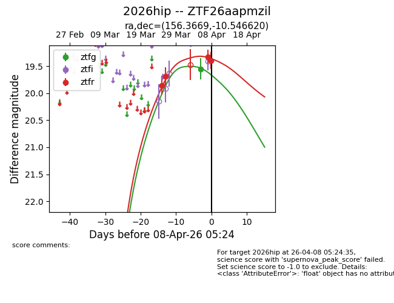
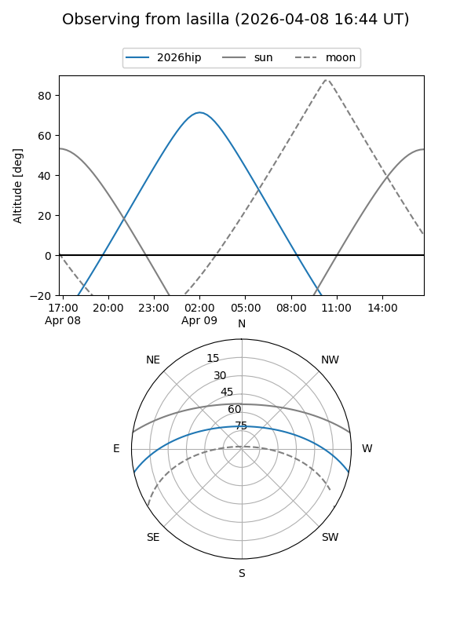
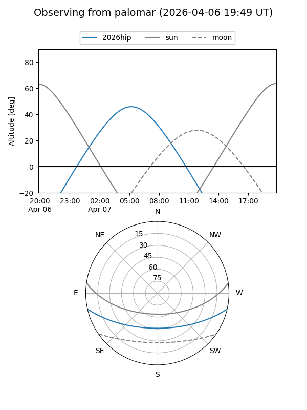
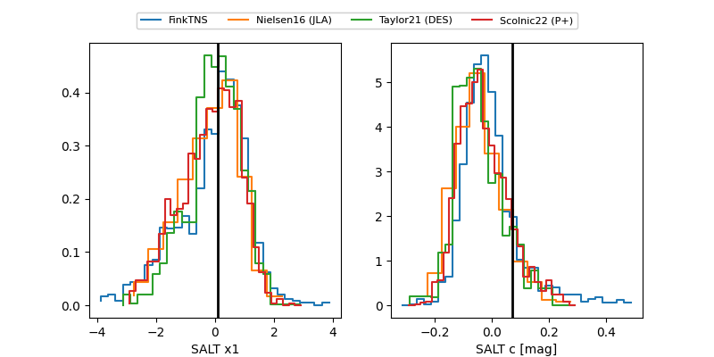

2026hip
Target 2026hip at 2026-04-08 05:29
Aliases and brokers:
FINK: link
Lasair: link
ALeRCE: link
TNS: link
YSE: link
alt names
ZTF26aapmzil (ztf,fink_ztf)
2026hip (tns,yse)
Coordinates:
equatorial (ra, dec) = 156.3669,-10.54662
equatorial (HMS+DMS) = 10:25:28.06,-10:32:47.83
galactic (l, b) = (254.7608,+38.31198)
Flags:
Photometry:
last ztfg=19.55, ztfr=19.40
1 ztfg, 4 ztfr detections
Lightcurve

Visibility


Additional plots
